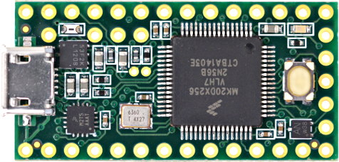
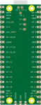

| VBUS | ||||
| VSYS | ||||
| Ground | ||||
| 3V3_EN | ||||
| 3V3(OUT) | ||||
| ADC_VREF | ||||
| GP28 | ADC2 | I2C0 SDA | UART0 TX | PWM6 A |
| Ground | AGround | |||
| GP27 | ADC1 | I2C1 SCL | UART1 RTS | PWM5 B |
| GP26 | ADC0 | I2C1 SDA | UART1 CTS | PWM5 A |
| RUN | ||||
| GP22 | SPI0 SCK | I2C1 SDA | UART1 CTS | PWM3 A |
| Ground | ||||
| GP21 | SPI0 CSn | I2C0 SCL | UART1 RX | PWM2 B |
| GP20 | SPI0 RX | I2C0 SDA | UART1 TX | PWM2 A |
| GP19 | SPI0 TX | I2C1 SCL | UART0 TX | PWM1 B |
| GP18 | SPI0 SCK | I2C1 SDA | UART1 RTS | PWM1 A |
| Ground | ||||
| GP17 | SPI0 CSn | I2C0 SCL | UART0 RX | PWM0 B |
| GP16 | SPI0 RX | I2C0 SDA | UART0 TX | PWM0 A |